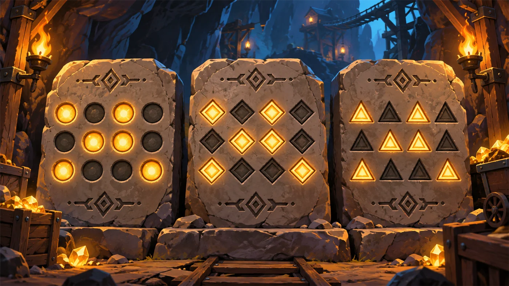
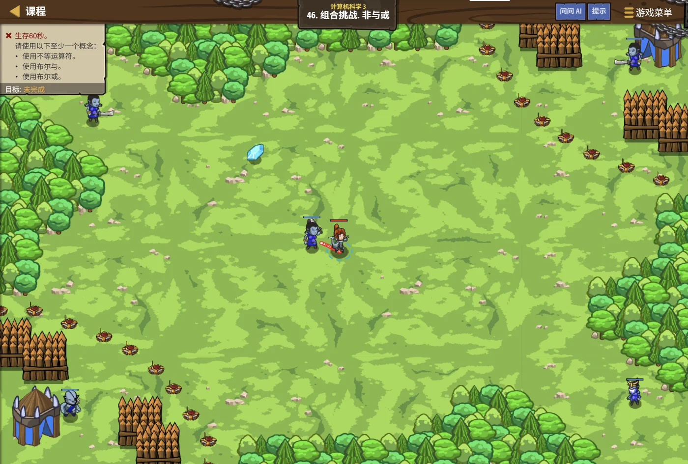

矿坑往下走了三百级台阶，脚下忽然传来水声。
一条地下暗河横在面前，水面上浮着一串串发光的符文——
每一串都是 0 和 1，整整齐齐排成八格。
安雅举起火把：这是矿工留下的记号。他们说，计算机里的每一个数，都是这样一串灯。
你盯着水面：可……负数怎么办？这八格里没有"-"这个符号啊。
她笑了：问得好。这个问题，当年难倒过全世界的人。

安雅 · 红发队长
前面两级，你已经会存数、会算数、会做判断和循环了。
但从这一单元开始，我们要往下钻一层：
看计算机到底是怎么把这串 0 和 1 变成数字的。
这是 C++ 三级的第一课，也是最容易出题的一课——
原码、反码、补码，三兄弟你必须分得清。
assets/illustrations/py-L3-01-01_underground_river.webp
【配图位】地下暗河水面浮着由 0 和 1 组成的发光符文串，每串整齐排成八格；一名戴兜帽的矿工举着岩灯在岩壁上读一个被刻出来的负号；岩壁渗水、火把暖光与水面的冷蓝反光形成对比。
图 1：符文矿坑·暗河下的符文——今天要从这里开始
0.1 学习目标
1学完这个单元，你将能……
- 说清符号位是怎么来的
- 写出一个数的原码、反码、补码
- 说出原码的两个毛病、补码的两个好处
- 在三种码之间来回转换
- 记住 8 位补码的表示范围
- 判断两个数相加会不会溢出
2对标 GESP 考纲（C++ 三级）
- 掌握机器数的三种表示：原码、反码、补码
- 理解符号位的作用与三码的转换规则
- 掌握定点整数的表示范围
- 理解溢出的产生原因与判断方法
- 考核目标：能正确写出三码、判断范围、解释补码为什么能把减法变加法
0.2 考纲对照
| 本单元小节 | 对应考纲条目 | 真题常考形式 |
|---|
| 1 计算机怎么存负数 | 数据的编码表示 | 为什么必须要有符号位 |
| 2 原码 | 原码的表示方法 | 写出某数的原码；指出原码的缺陷 |
| 3 反码 | 反码的表示方法 | 原码与反码互化 |
| 4 补码 | 补码的表示方法 | 求负数的补码；补码为什么能变加法 |
| 5 三码互换 | 三种码的相互转换 | 给一串补码，倒推十进制真值 |
| 6 范围与溢出 | 定点数的表示范围 | 8 位补码的范围；判断是否溢出 |
先记住三个词：
原码（sign-magnitude）、反码（ones' complement）、补码（two's complement）。
它们是同一串 0 和 1 的三种"读法"——格子还是那八个格子，只是往里填数的规矩不同。
1.1 先约定：8 位二进制
先把基础打牢。我们约定：下面所有例子都用 8 位二进制（正好一个字节）。
正数很好办。5 写成八位二进制就是
正数 5 的八位写法
TEXT
128 64 32 16 8 4 2 1 ← 每一位的"分量"
0 0 0 0 0 1 0 1 ← 5 = 4 + 1
= 5
读法 从右往左，第 1 位值 1、第 2 位值 2、第 3 位值 4……每一位是前一位的两倍
图 2（SVG）：八位二进制里，每一位的"分量"是多少
1.2 正数很好办
正数照上面这样写就行，0 ~ 255 一共 256 个非负整数，八格全都能装下。
C++ 里的整数不止 8 位：
C++ 的整数类型有固定的位宽——
short 一般 16 位、int 一般 32 位、long long 一般 64 位。
位宽越大，能表示的范围越大，但"用灯来表示数"这个道理完全一样。
为了讲得清楚，本单元一律用 8 位来举例——八格看得见，数得清。
1.3 负数的两个麻烦
可负数怎么办？八个格子里只有 0 和 1，没有"-"这个符号。
打个比方：
八位二进制就像一排八个只有"开"和"关"两种状态的灯——没有"半开"，也没有"红色"。
既然灯只能表示 0 和 1，那"负号"这个东西就根本没地方放。
所以人们只能"挪用"一个格子，专门拿来当正负号的标记——这就是符号位的由来。
所以八位二进制被分成了两半：
| 方案 | 怎么分 | 结果 |
|---|
| 不借格子 | 八格全用来表示大小 | 只能表示 0 ~ 255，没有负数 |
| 借一格当符号位 | 最高位管正负，剩下七位管大小 | 能表示负数了，但要定规矩 |
一句话记住：
最高位（最左边那一格）不再是"分量 128"，而是"正负号"。
约定：0 表示正，1 表示负。
2.1 借一格当正负号
有了符号位，第一套方案立刻就能想出来：正数照写，负数就把符号位改成 1，数值位原样不动。
这就是原码（sign-magnitude）。
原码：符号位 + 数值位
TEXT
+5 的八位原码： 0 000 0101 符号位 0，后面是 5
-5 的八位原码： 1 000 0101 符号位 1，后面还是 5
+0 的八位原码： 0 000 0000
-0 的八位原码： 1 000 0000 ← 注意！0 有两种写法
规则 最高位：0 为正、1 为负；其余七位照抄这个数的绝对值
图 3（SVG）：原码的写法——一格当正负号，七格装大小
2.2 原码的两个毛病
原码很好懂，可它有两个大麻烦：
麻烦一：0 有两种写法。
0000 0000 是 +0，1000 0000 是 −0。
可 0 明明只有一个，机器每次判断"这个数是不是 0"都得查两遍，白白浪费一个编码，
而且八位本来能表示 256 个数，现在只剩 255 个有效编码了。
麻烦二：加减法要分四种情况。
用原码算 1 + (-1) 时，机器不能直接加，得先看两个数的符号：
同号就相加、异号就相减，还得先比出谁的绝对值大、结果该取谁的符号……
等于说：加减法得写四套不同的电路，又慢又容易出错。
打个比方：
用原码做加减法，就像家门口挂着四把不同的钥匙——正加正、正加负、负加正、负加负，
每种情况都得先认出"我是哪一类"，再去掏对应的那把钥匙。
人们真正想要的是：不管正负，都用同一套动作就能算出来。
3.1 反码的规则
人们想：既然负数不好算，那能不能让负数"长得"更像正数一点？
于是反码来了。
反码规则：
正数：反码和原码完全一样。
负数：符号位保持 1 不动，数值位按位取反（0 变 1，1 变 0）。
从原码到反码
TEXT
-5 的原码： 1 000 0101
↓ 符号位不动，后面七位全部翻面
-5 的反码： 1 111 1010
+5 的原码： 0 000 0101
+5 的反码： 0 000 0101 ← 正数原样不动
口诀 正数照抄，负数"符号不动、后面翻面"
图 4（SVG）：反码的求法
3.2 反码解决了什么，又留下了什么
| 问题 | 原码 | 反码 |
|---|
| 0 有两种写法 | 有（+0 / −0） | 还是有（0000 0000 / 1111 1111） |
| 加减法要分类讨论 | 要四种情况 | 好一些，但还是不够 |
| 减法能不能变加法 | 不能 | 勉强可以，但要"循环进位" |
反码的遗留问题：
用反码算加法时，如果最高位产生了进位，必须把这个 1 再"绕回来"加到最低位——这叫循环进位。
多一道手续，电路就得多一套；而且 0 还是有两种写法，问题没根治。
所以反码只是个"过渡方案"，真正被计算机采用的不是它。
4.1 反码再加 1
最后一招来了，而且赢得干净利落：在反码的基础上再加 1。
补码规则（重中之重）：
正数：补码 = 原码（三码全一样）。
负数：先求反码（符号位不动、数值位取反），再在最低位加 1。
三步走：原码 → 反码 → 补码
TEXT
求 -5 的八位补码：
第 1 步 写出 +5 的二进制： 0000 0101
第 2 步 符号位变 1，数值位取反： 1111 1010 ← 这是反码
第 3 步 最低位加 1： 1111 1011 ← 这就是补码
所以 −5 的八位补码是 1111 1011
图 5（SVG）：补码的三步走与两个好处
打个比方：
补码很像钟表上的指针——表盘只有十二个刻度，
往前拨 3 格和往后拨 9 格，最后停在同一个位置。
既然表盘是"转圈"的，那"减去一个数"就可以改写成"加上另一个数"，而且结果一模一样。
这正是补码能把减法变成加法的原因。
4.2 为什么说"减法变加法"
算 5 - 3。用补码，我们可以把它当成 5 + (-3) 来算：
减法真的变成了加法
TEXT
+5 的补码： 0000 0101
-3 的补码： 1111 1101 （3 是 0000 0011 → 取反 1111 1100 → 加 1）
两数相加：
0000 0101
+ 1111 1101
───────────
1 0000 0010 ← 最高位多出一个 1
把那个多出来的 1 丢掉： 0000 0010 = 2 ✔ 5 - 3 = 2
结论 负数用补码表示后，"减一个数"就等于"加它的补码"，进位丢掉即可
三句话说清补码的价值：
① 零只有一种写法——不用再判断"这是 +0 还是 −0"。
② 加减法合成了一套——机器只需要一个加法器，电路大大简化。
③ 进位丢掉就行——不用像反码那样"循环进位"，省一道手续。
正因为这三点，现在的计算机几乎都用补码。
5.1 三码对照表
| 真值 | 原码 | 反码 | 补码 |
|---|
| +5 | 0000 0101 | 0000 0101 | 0000 0101 |
| +0 | 0000 0000 | 0000 0000 | 0000 0000 |
| −0 | 1000 0000 | 1111 1111 | 不存在 |
| −1 | 1000 0001 | 1111 1110 | 1111 1111 |
| −5 | 1000 0101 | 1111 1010 | 1111 1011 |
| −127 | 1111 1111 | 1000 0000 | 1000 0001 |
| −128 | 表示不了 | 表示不了 | 1000 0000 |

assets/illustrations/py-L3-01-02_three_encodings.webp
【配图位】矿坑石壁上并排嵌着三块一模一样的石板，每块都刻着同一串由发光格组成的位模式，但三块的"翻转格"位置各不相同：左边一块只有最左一格发红光（原码）、中间一块除最左格外还有好几格发蓝光（反码）、右边一块同样多格发光但最右一格额外亮起（补码）；每块石板下方刻着名称，一名矿工举灯从左往右依次对照。
图 6：同一串位模式，三种编码三副样子
规律发现：
正数：原码 = 反码 = 补码，三兄弟一模一样。
负数：原码 →（符号位不动、数值位取反）→ 反码 →（加 1）→ 补码。
反过来：补码 →（减 1）→ 反码 →（符号位不动、数值位取反）→ 原码。
一句话：由反码到补码是"加 1"，由补码到反码就是"减 1"。
5.2 从补码倒推原数
考试也常倒着考：给你 1111 0110，问它是多少。方法有两种。
两条路都能走通
TEXT
题目：1111 0110 是一个 8 位补码，求它表示的十进制数。
【方法一】先还原成原码，再读
已知这是补码 → 先减 1 得反码： 1111 0101
符号位不动、数值位取反得原码： 1000 1010
读出来：符号是负，数值是 8+2=10 → −10
【方法二】直接用公式
最高位是 1，说明是负数：
真值 = 各位按权求和 − 256
1111 0110 = 128+64+32+16+4+2 = 246
246 − 256 = −10 ✔ 两条路答案一致
答案 −10 —— 方法二更快，但要记住"负数要减 256"（因为最高位那一格代表 −128 而不是 +128）
方法二为什么用 256？
因为 8 位补码的"循环"长度是 2 的 8 次方 = 256。
绕着表盘转满一圈就回到原处——所以 246 和 −10 在八位的世界里是同一个位置。
换成 16 位就要减 65536，换成 n 位就要减 2 的 n 次方。
6.1 八位补码的范围
八位补码能表示多少个数？算一算：一共 2^8 = 256 种组合，其中一半是负数、一半是非负数。
图 7（SVG）：八位补码的范围是 −128 ~ 127，不是对称的
打个比方：
八位二进制一共能排出 2 的 8 次方 = 256 种不同的组合。
补码把这 256 种组合平均分成两半：一半表示 0 和正数，一半表示负数。
可"零"只有一个，却占掉了正数那边的第一格，于是多出来的那一格就分给了负数——所以范围是 −128 ~ 127，负数比正数多一个。
assets/illustrations/py-L3-01-03_range_numberline.webp
【配图位】矿壁上一条由石砖拼成的数轴，从 −128 一直排到 127；数轴正中立着一个标着 0 的石碑，零左边有 128 块砖、右边有 127 块砖，因此最左端那块砖（−128）被特别画上金色边；数轴两端各画着一道断崖，崖边堆着滚出去的石砖（表示溢出）；一名矿工站在数轴前数砖。
图 8：八位补码的数轴——一头比另一头多一格
必记结论：
n 位补码能表示的整数范围是 −2n−1 ～ 2n−1 − 1。
8 位：−128 ~ 127；16 位：−32768 ~ 32767。
负数比正数多一个，这是补码的特点（因为 0 算在非负数那边）。
对照 C++：int 是 32 位，范围是 −2147483648 ~ 2147483647。
6.2 溢出是怎么回事
那什么叫溢出？很简单：算出来的结果超出了能表示的范围。
溢出的例子
TEXT
127 + 1 = ?
0111 1111 （+127）
+ 0000 0001 （+1）
───────────
1000 0000 ← 读作 −128！
两个正数相加，结果却变成了负数——这就是溢出。
要点 两个正数相加却得到负数，或两个负数相加却得到正数——这就是溢出的信号
做题小窍门：
判断两个 8 位补码相加会不会溢出，只要看两件事：
① 两个正数相加，结果却是负数 → 正溢出；
② 两个负数相加，结果却是正数 → 负溢出。
结果一定落在 −128 ~ 127 里。落在外面，就是溢出。
C++ 里要特别小心：
有符号整数溢出在 C++ 里是未定义行为（undefined behavior），结果不可预测；
而无符号整数溢出是"规定好的回绕"——它会自动绕回 0 重新开始数。
所以考试里问"有符号数左移溢出后结果是否确定"，答案是"不确定"。
关卡
非与或
进入关卡 →
故事：暗河对岸是一条铺满符文石板的路，每块石板上都刻着一串八位二进制。
安雅说：这些符文不光是记号——它们就是矿坑的密码。
读对了，桥才会浮起来。
你低头看第一块石板：1111 1011。
这是哪一个数？她问。
你数了数：……是 −5。
思路：把每一块石板上的八位二进制按补码规则读出来，
再用程序验算一遍，确认自己没算错。

assets/stages/py-L3-01-stage1_not_and_or.webp
【截图位】逻辑之路关卡：营火或符文石前，代码编辑区可见本轮用到的位运算语句。
关卡实况：逻辑之路
用位运算拆出每一位，验算补码
C++
#include <iostream>
using namespace std;
int main() {
// 把 -5 存进一个 8 位的容器里，看它到底是什么
signed char x = -5;
// 逐位打印（从最高位到最低位）
for (int i = 7; i >= 0; i--) {
int bit = (x >> i) & 1;
cout << bit;
if (i == 4) cout << " "; // 每四位隔开一下，方便看
}
cout << endl;
return 0;
}
OUTPUT 1111 1011
验证 这正好就是 −5 的八位补码——计算机内部真的就是这么存的
和本单元的关系：
(x >> i) & 1 的意思是"把第 i 位挪到最右边，再和 1 相与"。
这是取某一位的通用写法——第 3 单元学位运算时会正式讲它。
你可以把 x 换成别的数，比如 −1、−128、127，看看它们各自长什么样。
去扣哒世界闯这一关 →

扣哒鸭 · 调试官
三码这块，真题最爱考"说法对不对"。四条，每一条都考过。

扣哒鸭：符号位要按住不动，只翻后面七位数值位。
要是连符号位一起翻了，−5 就变成 +5 的样子了——那不乱套了？
正确写法：符号位不动、数值位取反，最后再在最低位加 1
2
把"补码进位要丢掉"记成了"反码进位要丢掉"。

扣哒鸭：正好反了！
补码的进位是直接丢弃；
反码的进位必须绕回来加到最低位（循环进位）。
真题里"反码运算中最高位进位要抛掉"这句话是错的。
记忆：补码丢，反码绕
3
以为 (a & 1) == 1 成立就说明 a 是"正"奇数。

扣哒鸭：取最低位只能判断奇偶，判断不了正负。
−3 的补码是 1111 1101，最低位也是 1——
所以成立的只能是"a 是奇数"，不是"正奇数"。
正确认识：a & 1 只管奇偶，与正负无关

扣哒鸭：原码的数值位只有七位，最大只能装 127。
−128 只有补码能表示（1000 0000），原码和反码都表示不出来。
这就是补码"多一个负数"的直接体现。
正确认识：8 位原码范围 −127~127；8 位补码范围 −128~127
前 4 题改编自 C++ 三级真题，其余为原创练习题。
改编自 2026 年 9 月 · C++ 三级 · 第 1 题单选题
关于计算机的数据编码，下面说法不正确的是（ ）。
A.数字 0，不管采用原码、反码还是补码，它的 8 位二进制形式都是 0000 0000
B.计算机科学中，单位换算默认 1 KB = 1024 B，而非 1000 B
C.原码是最直观的一种有符号数表示方法
D.反码运算中，最高位产生的进位要抛掉
查看答案与详解
答案：D。反码运算时，最高位产生的进位不能抛掉，
必须把这个 1 绕回来加到最低位——这叫"循环进位"。
要抛掉进位的，是补码。补码相加时最高位的进位直接丢弃，结果就对了。
A 项：0 在补码里只有一种写法 0000 0000，说"原码反码补码都是它"也是对的
（虽然原码/反码还有 −0 的写法，但 +0 确实都是全 0）。
对应小节3.2 反码解决了什么；4.1 反码再加 1。
改编自 2026 年 9 月 · C++ 三级 · 第 4 题单选题
关于计算机编码中的补码，下面说法错误的是（ ）。
A.正数的补码与其原码、反码相同
B.负数的补码：将其对应正数的原码按位取反（得到反码），然后再加 1
C.8 位的补码，最大能表示的数据是 127，最小能表示的数据是 −127
D.负数的补码，也可以从右往左扫描正数的二进制形式，遇到第一个 1 之后，左边所有位取反
查看答案与详解
答案：C。8 位补码的范围是 −128 ~ 127，最小值是 −128，不是 −127。
为什么是 −128？因为 0 只占一个编码（0000 0000），
省下来的 1000 0000 就分给了 −128。
D 项是对的，而且是个很好用的速算法：比如求 −12 的补码，
12 是 0000 1100，从右往左第一个 1 在倒数第 3 位，
它左边的位（0000 1）全部取反 → 1111 0100，这就是 −12 的补码。
对应小节6.1 八位补码的范围。
改编自 2026 年 6 月 · C++ 三级 · 判断题 第 1 题判断题
对于计算机编码运算，补码做加法运算时，如果最高位产生进位，需要把该进位循环加到结果的最低位。（ ）
查看答案与详解
答案：错误（×）。"循环进位"是反码的规矩，不是补码的。
补码相加时，最高位的进位直接丢弃——丢掉之后结果恰好就是对的。
例：0000 0101（+5）+ 1111 1101（−3）= 1 0000 0010，
丢掉最高位得 0000 0010 = 2，正是 5 − 3 的答案。
记住口诀：补码丢，反码绕。
对应小节4.2 为什么说"减法变加法"。
改编自 2026 年 6 月 · C++ 三级 · 判断题 第 5 题判断题
a 是 int 有符号整型，
若 (a & 1) == 1 的结果为 true，
则 a 一定是正奇数。（ ）
查看答案与详解
答案：错误（×）。a & 1 取的是 a 的最低位，
只能判断奇偶，判断不了正负。
反例：a = −3，它的补码最低位是 1，
所以 (a & 1) == 1 成立，但 −3 是负奇数。
要判断"正奇数"，得同时满足两个条件：a > 0 && (a & 1) == 1。
对应小节6.2 溢出是怎么回事（补码与位运算的结合）。
原创练习题单选题
十进制数 −26 的 8 位补码是（ ）。
A.1001 1010 B.1110 0110 C.1110 0101 D.1001 1011
查看答案与详解
答案：B。三步走：
① 26 的二进制：0001 1010（16 + 8 + 2 = 26）
② 符号位变 1、数值位取反：1110 0101（这是反码）
③ 最低位加 1：1110 0110 ← 这就是补码
易错项 C 是反码，忘记加 1 就会选它；A 项是 −26 的原码（符号位 1 + 26 的二进制）。
对应小节4.1 反码再加 1。
原创练习题单选题
8 位补码 1001 0110 表示的十进制数是（ ）。
A.−106 B.−105 C.−22 D.150
查看答案与详解
答案：A。用"减 256"的公式最快：
1001 0110 = 128 + 16 + 4 + 2 = 150；
因为最高位是 1（负数），150 − 256 = −106。
验算（还原成原码）：补码减 1 → 1001 0101；
符号位不动、数值位取反 → 1110 1010；
数值部分 64+32+8+2 = 106，符号为负 → −106 ✔
B 项是忘记减 256 的抄错；D 项是没看出最高位是符号位。
对应小节5.2 从补码倒推原数。
原创练习题判断题
在 8 位补码中，0111 1111 加 1 之后得到 1000 0000，
这个结果表示 128。（ ）
查看答案与详解
答案：错误（×）。这正是典型的正溢出：
两个正数相加，结果却是负数。1000 0000 在补码里表示的是 −128，不是 128。
原因：8 位补码的表示范围只有 −128 ~ 127，128 超出了上界，装不进去。
顺便提醒：在 C++ 里，有符号整数溢出属于未定义行为，结果不可预测；
而无符号整数则会"回绕"到 0。
对应小节6.2 溢出是怎么回事。
原创练习题编程题
题目要求：读入一个 8 位二进制串（如 11111011），
输出它作为补码所表示的十进制数。
查看参考答案与要点
#include <iostream>
#include <string>
using namespace std;
int main() {
string s;
cin >> s; // 读入 8 位二进制串
int val = 0;
for (int i = 0; i < 8; i++) {
val = val * 2 + (s[i] - '0'); // 先按无符号读出数值
}
// 最高位是 1 → 这是负数，要减去 2 的 8 次方
if (s[0] == '1') {
val -= 256;
}
cout << val << endl;
return 0;
}
输入 11111011 输出：−5；输入 00000101 输出：5；
输入 10000000 输出：−128
要点：
① s[i] - '0' 把字符 '1' 变成数字 1——这是字符转数字的通用写法；
② val = val * 2 + 当前位 是"边读边算"的经典套路；
③ 判负的关键是看最高位，然后减去 2n（8 位就是减 256）；
④ 这个程序对任何 8 位串都成立，包括 10000000（得到 −128）。
对应小节5.2 从补码倒推原数。
安雅 · 红发队长
四句话记住这一单元：
一、最高位是符号位：0 为正、1 为负。
二、正数三码相同；负数"符号不动、数值翻面"得反码，再"加 1"得补码。
三、补码的两个好处：零只有一种写法；减法能变成加法（进位直接丢）。
四、8 位补码范围是 −128 ~ 127，负数比正数多一个。
符文读懂了。下一站，我们去七棱水晶那里——
同一串数，换一种刻法，就是另一个数。
你在暗河边上收获了什么
- 符号位——最高位不再表示大小，而是表示正负；0 为正、1 为负。
- 原码——符号位 + 绝对值。缺点是 0 有两种写法、加减法要分四种情况。
- 反码——负数"符号位不动、数值位取反"。0 仍有两种写法，加减法还要循环进位。
- 补码——反码再加 1。零唯一、减法变加法、进位直接丢，所以计算机用它。
- 三码互化——正数三码相同；负数原码↔反码是"数值位取反"，反码↔补码是"加 1 / 减 1"。
- 由补码求真值——最高位为 1 时，真值 = 按权求和 − 2n（8 位减 256）。
- 表示范围——n 位补码：−2n−1 ~ 2n−1−1；8 位即 −128 ~ 127。
- 溢出——两个正数相加得负数（正溢出），或两个负数相加得正数（负溢出）。
- C++ 细节——有符号整数溢出是未定义行为；无符号整数溢出会回绕。
- 位操作——
(x >> i) & 1 可以取出第 i 位。
下一站：七进制水晶
矿坑深处立着一块七棱水晶，每一面都映着同一个数的不同写法。
下一单元我们学进制转换：同一个数，为什么能写成好几种样子，又怎么互相换算。
加入扣哒世界，把这条考纲之路走一遍 →